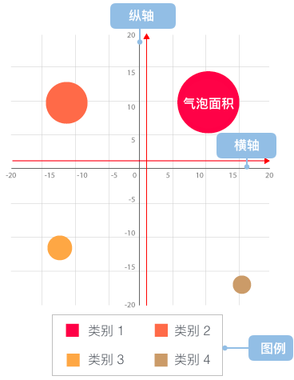

气泡图
气泡图的简介

气泡图是一种多变量图表，是散点图的变体，也可以认为是散点图和百分比区域图的组合。
气泡图最基本的用法是使用三个值来确定每个数据序列，和散点图一样，气泡图将两个维度的数据值分别映射为笛卡尔坐标系上的坐标点，其中 X 和 Y 轴分别代表不同的两个维度的数据，但是不同于散点图的是，气泡图的每个气泡都有分类信息（他们显示在点旁边或者作为图例）。每一个气泡的面积代表第三个数值数据。另外还可以使用不同的颜色来区分分类数据或者其他的数值数据，或者使用亮度或者透明度。表示时间维度的数据时，可以将时间维度作为直角坐标系中的一个维度，或者结合动画来表现数据随着时间的变化情况。
气泡图通常用于比较和展示不同类别圆点（这里我们称为气泡）之间的关系，通过气泡的位置以及面积大小。从整体上看，气泡图可用于分析数据之间的相关性。
需要注意的是，气泡图的数据大小容量有限，气泡太多会使图表难以阅读。但是可以通过增加一些交互行为弥补：隐藏一些信息，当鼠标点击或者悬浮时显示，或者添加一个选项用于重组或者过滤分组类别。
另外，气泡的大小是映射到面积而不是半径或者直径绘制的。因为如果是基于半径或者直径的话，圆的大小不仅会呈指数级变化，而且还会导致视觉误差。
英文名：Bubble chart
气泡图的构成

| 图表类型 |
气泡图 |
| 适合的数据 |
三个连续字段，一个分类字段 |
| 功能 |
观察数据的分布情况
对比各个分类字段对应的数值大小
|
| 数据与图形的映射 |
两个连续字段分别映射到横轴和纵轴第三个连续字段映射到气泡大小分类字段映射到颜色。
|
| 适合的数据条数 |
暂无限制 |
气泡图的应用场景
一、分类对比数据
气泡图可用于显示分类数据，这种情况下，相比于柱状图它能达到更美观的目的。
如下图所示，分别使用柱状图和气泡图展示了不同年龄段人群中有使用社交网络的数量占比。在气泡图中，使用气泡的大小来映射数据的大小，而柱状图中使用高度来代表，颜色代表不同的年龄段。相比于高度，面积的映射更直观。
var data = [
{age: '18-24', percentage: 29},
{age: '25-34', percentage: 40},
{age: '35-44', percentage: 20},
{age: '45-54', percentage: 26},
{age: '55-64', percentage: 20},
{age: '65+', percentage: 13}
];
var Stat = G2.Stat;
var chart = new G2.Chart({
id: 'c2',
width : 450,
height : 250,
plotCfg: {
margin: [40, 80, 60, 60]
}
});
chart.col('percentage', {
'alias': '百分比(%)'
});
chart.col('age', {
'alias': '年龄段'
});
chart.source(data);
chart.legendVisible('percentage', false);
chart.point().position('age*percentage').size('percentage', 32.5, 10).opacity(0.85).shape('circle').color('age');
chart.render();
var chart2 = new G2.Chart({
id: 'c22',
width : 450,
height : 250,
plotCfg: {
margin: [40, 80, 60, 60]
}
});
chart2.col('percentage', {
'alias': '百分比(%)'
});
chart2.col('age', {
'alias': '年龄段'
});
chart2.source(data);
chart2.interval().position('age*percentage').color('age');
chart2.render();
二、多变量映射，用于分析数据的相关性
气泡图作为散点图的变体，也可用于探索分析数据的相关性，在散点图的基础上，还可新增一至两个维度（映射至气泡的大小和颜色）。
在下图中，通过将销售量映射为气泡的大小，这样我们就可以很清晰得看出不同季度下广告支出和销售量之间的关系，从各个季度的数据看，广告支出越多销售量越大，两者呈正相关关系，在这里只是举一个例子，实际情况下还需要以更多的数据来进行分析。
其中 x 轴代表时间，y 轴为广告支出，气泡大小表示销售量。
| time（季度） | adSpend（广告支出）| sales（销售额） |
|------|----|------|
|Q1|120|345|
|Q2|350|500|
|Q3|480|666|
|Q4|370|549|
var data = [
{time: 'Q1', adSpend: 120, sales: 345},
{time: 'Q2', adSpend: 350, sales: 500},
{time: 'Q3', adSpend: 480, sales: 666},
{time: 'Q4', adSpend: 370, sales: 549}
];
var Stat = G2.Stat;
var chart = new G2.Chart({
id: 'c3',
width : 600,
height : 250,
plotCfg: {
margin: [40, 60, 80,60]
}
});
chart.col('time', {
alias: '季度'
});
chart.col('adSpend', {
alias: '广告支出'
});
chart.source(data);
chart.legendVisible('sales', false);
chart.point().position('time*adSpend').size('sales', 37.25, 7.25).color('#2ca25f').opacity(0.85).shape('circle').label('sales', {offset:0,label:{fill: "#fff"}});
chart.render();
除了大小的映射之外，我们还可以为每个气泡添加上颜色属性，这时候气泡图就为我们完美得展示了四个维度的数据。通常颜色属性用于表达数据的分类。
下图展示了各大洲各个国家人均国内生产总值、人均寿命以及人口的数据。其中横坐标表示人均国内生产总值，纵坐标表示人均寿命，气泡的大小表示人口数量，然后用颜色来区分各个洲。可以看出人均国内生产总值和人均寿命的相关性，大致呈正相关性，并且人均寿命较长的地区主要集中在亚洲、欧洲和大洋洲。亚洲的人口较多。
| continent（所属大洲） | Country（国家名）| LifeExpectancy（人均寿命） | GDP（人均国内生产总值$）|Population（人口总数） |
|------|----|------|----|------|
|Africa|Algeria|72.301|6223.367465|33333216.0|
|Americas|Colombia|72.889|7006.580419|44227550.0|
|Asia|China| 72.961|4959.114854|1318683096.0|
|Europe|Austria|79.829|36126.4927|8199783.0|
|...|...|...|...|...|
|Oceania|New Zealand| 80.204|25185.00911|4115771.0|
$.getJSON('/data.json?filename=bubble-chart', function(data) {
var Stat = G2.Stat;
var chart = new G2.Chart({
id: 'c4',
width : 800,
height : 400,
plotCfg: {
margin: [20, 120, 80,80]
}
});
chart.col('LifeExpectancy', {
alias: '人均寿命（年）'
});
chart.col('GDP', {
alias: '人均国内生产总值($)',
tickCount: 10
});
chart.axis('GDP', {
formatter: function (value) {
return (value/1000).toFixed(0) + 'k';
}
});
chart.col('Population',{
type: 'pow'
});
chart.tooltip({
map: {
name: "人口总数",
value: "Population",
title: "Country"
}
});
chart.source(data);
chart.legendVisible('Population', false);
chart.legendVisible('Country', false);
chart.point().position('GDP*LifeExpectancy').size('Population',35,5).color('continent').opacity(0.65).shape('Country','circle');
chart.render();
});
气泡图的另一个广泛用途，就是气泡图与地图的结合，即带气泡的地图，来展示具有地域特征的数据。具体详见Bubble Map，这里只简单展示一个例子。
如图，将各个国家遭受的恐怖袭击次数用气泡图来展示的效果。可以看出伊拉克遭受的恐怖袭击次数最多，并且恐怖袭击主要集中在中东地区。
$.getJSON('/data.json?filename=world.geo', function(mapData) {
var Stat = G2.Stat;
var Frame = G2.Frame;
var userData = [
{name: 'Iraq',value: 10701},
{name: 'Pakistan',value: 7725},
{name: 'Afghanistan',value: 5693},
{name: 'India',value: 3468},
{name: 'Nigeria',value: 1912},
{name: 'Philippines',value: 1850},
{name: 'Somalia',value: 1827},
{name: 'Yemen',value: 1726},
{name: 'Thailand',value: 1620},
{name: 'Libya',value: 1082}
];
var chart = new G2.Chart({
id: 'c5',
width: 600,
height: 300,
plotCfg: {
margin: [0]
}
});
chart.source(userData);
chart.tooltip({
crosshairs: false
});
var gmap = new G2.Plugin.GMap({
chart: chart,
mapData: mapData, // 地图数据地址
stroke: '#999',
fill: '#fff'
}).draw();
chart.legendVisible('value', false);
chart.point().position(Stat.map.center('name', mapData)).size('value', 25, 4).opacity(0.85).shape('circle').color('value','#FFFFEE-#EE4B4B');
chart.render();
});
气泡图的扩展阅读
变型
标签
实现
G2